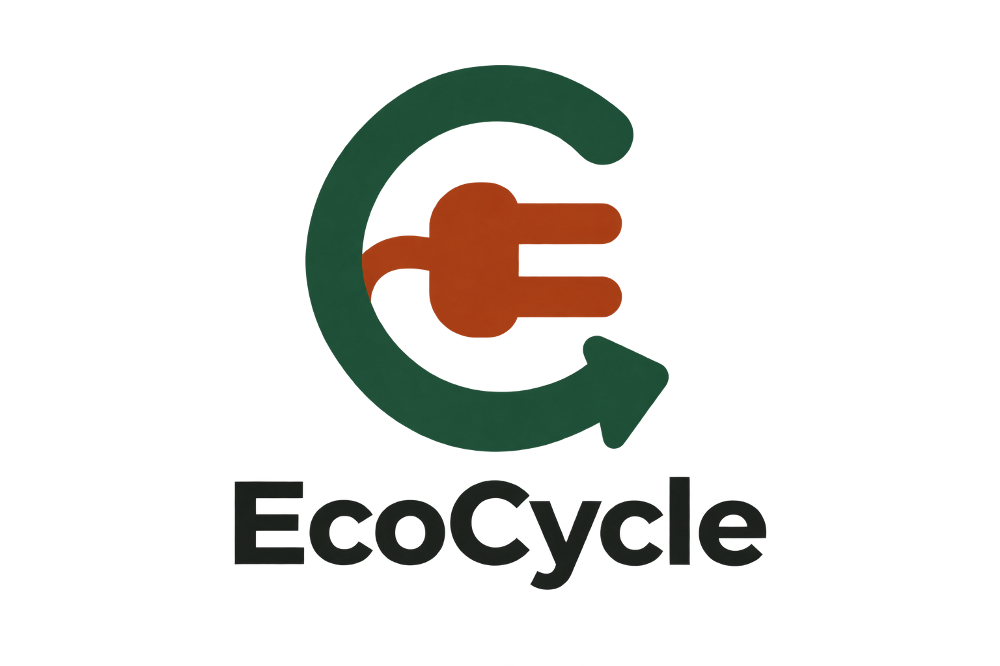

A little guidance.
A longer life.
A warm, practical visual language that helps people repair, reuse, and recycle electronics with confidence.

Brand & logo
A circular C represents a longer device life. An orange plug and connecting wire make the connection to electronics tangible.

Clear, capable, encouraging.
Use familiar language. Keep the next action obvious. Treat unresolved repairs as a useful outcome, not a failure.
- Keep the full icon visible; never crop the C, arrow, plug, or wire.
- Leave clear space of at least one plug-prong thickness.
- Use the approved original darker-orange logo artwork. Use the supplied approved charcoal wordmark. Recommended minimum lockup width: 120px.
- Use on white or warm white. Do not stretch, rotate or add effects.
- The supplied PNG is a concept master; a vector master and small-size testing are still needed.
Color with a purpose
Forest green anchors the brand. Warm orange identifies actions. Neutral surfaces leave space for the information that matters.
#245342Logo, selected brand accents#AF421DPrimary action, current step#FFF7EEPage canvas#292D29Headings, navigation, body copy#FFFFFFCards, fields, dialogsUse white text on forest and orange. Pair every status color with a label or icon. Red is reserved for errors and destructive actions; amber for safety warnings.
Typography
Headings: Montserrat SemiBold (600). Body, navigation, buttons, and forms: Open Sans / Arial / sans-serif. Body Regular (400); labels and buttons SemiBold (600). Use sentence case and concise, descriptive labels.
Layout & spacing
Use a 4px base scale. Group related information closely and separate tasks with generous space.
Desktop: content up to 1200px, 32px gutters, 24px column gaps. Tablet: two columns where useful. Mobile: one column, 20px gutters, labeled bottom navigation.
Cards: 12px radius / 24px padding · Controls: 8px radius / minimum 44px height · Sections: 48px apartForms & feedback
Reuse known device information. Place labels above fields, helper text below, and explain exactly how to fix an error.
Feedback hierarchy
Seek professional assistance before continuing.
Your entries are still here. Please try again.
Safety guidance stays visible. Never hide critical warnings inside an expandable explanation.
Design patterns
The five patterns selected in Task 4, applied to EcoCycle’s core flows. Sample providers and rewards below are illustrative.
Describe the symptoms
- 1 · Symptoms
- 2 · Safety
- 3 · Checks
Choose the issue that best describes your device.
Check your charging setup
Try basic checks before choosing a professional repair.
Find a repair service
Compare nearby providers and review their service details.
Check the cable and adapter
Look for visible damage before using your charging accessories.
Why does this matter?
A damaged cable or adapter may explain a charging issue. Keep this explanation optional while the instruction and warning remain visible.
What if I am unsure?
Skip the check and explore a professional repair service. Do not continue if you cannot assess safety.
Find your next stop
Illustrative results · not a live service directory.Available points Demo balance
Recent activity
Charging guide completed +20 points
Illustrative activity · pending eligibility rules
Recycling verification Pending
Pattern referenceDialogs
Use for consequential decisions. Name the item, explain the consequence, and offer a clear way to cancel.
Delete this device?
Samsung Galaxy S10 will be removed from your device list.
On open, focus the safe action. Escape closes the dialog; focus returns to its trigger.
Tables & records
Use tables for comparing structured records. Keep headers visible, align comparable values, and reflow to cards on small product screens where appropriate.
| Device | Activity | Outcome |
|---|---|---|
| Samsung Galaxy S10 | Charging guide | Unresolved |
| Headphones | Recycling service search | Location selected |
CSS library
All displayed UI styles are available in the downloadable stylesheet. Tokens make it easy to keep the product consistent.
Download complete stylesheetView the complete CSS
Loading stylesheet…EcoCycle visual style guide
Purpose: help people extend electronics’ useful life through accessible assessment, repair guidance, local services, and rewards.
Brand & visual foundations
Green circular C / arrow with an orange plug and wire; user-supplied approved darker-orange logo artwork with charcoal lettering. Forest #245342 anchors identity; orange #AF421D identifies actions; warm white #FFF7EE provides the canvas; charcoal #292D29 is the default for headings, navigation, and body text.
Typography & layout
Headings: Montserrat SemiBold. Other text: Open Sans Regular; labels and buttons Open Sans SemiBold. Titles 32px; section headings 24px; body 16px; labels 14px; secondary captions 12px. Use a 4px spacing scale, 24px card padding, 12px card radius, and controls at least 44px high. Responsive desktop, tablet, and mobile layouts.
Interaction principles
Familiar language, minimal repeated input, visual instructions with concise explanations, immediate feedback, error prevention, and focused task flows. Safety warnings remain visible.
Core UI elements
Logo, colors, typography, spacing, buttons, Lucide outline icons, forms, validation, feedback, navigation, context menus, dialogs, tables, and status labels. Styles and applicable interaction states are included in the CSS library.
Task 4 design patterns
- Wizard — device condition assessment.
- Cards — repair options.
- Progressive disclosure — repair guidance.
- Search filters — local services.
- Dashboard — reward tracking.
Source of truth
EcoCycle Style Guide · v1.0
Figma informs flows only. Visual styling is independently designed. Demo interactions do not represent a connected backend.